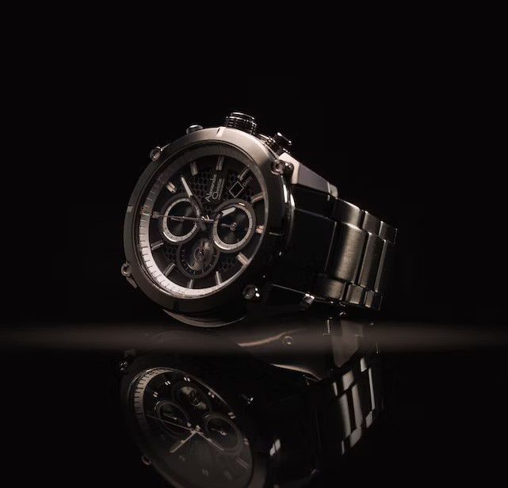

Our Story
This is the story of DRYDEN Watches. Founded in [year], our journey began with a vision to create timepieces that not only tell time but also tell a story.

This is the story of DRYDEN Watches. Founded in [year], our journey began with a vision to create timepieces that not only tell time but also tell a story.
Welcome to the world of DRYDEN, where time is an art and every moment is a masterpiece. At DRYDEN Watches, we go beyond the conventional, crafting timepieces that marry precision with elegance.
Our story is one of passion for watchmaking, a commitment to quality, and a dedication to timeless design. Each DRYDEN watch is a symbol of sophistication, a blend of traditional craftsmanship and modern aesthetics.
Explore our collection and discover watches that not only keep you punctual but also elevate your style. Whether you prefer a classic timepiece or a bold statement watch, DRYDEN has the perfect companion for every occasion.
Join us in celebrating moments, capturing memories, and making a statement with a DRYDEN watch. Time is precious, and so is your style.